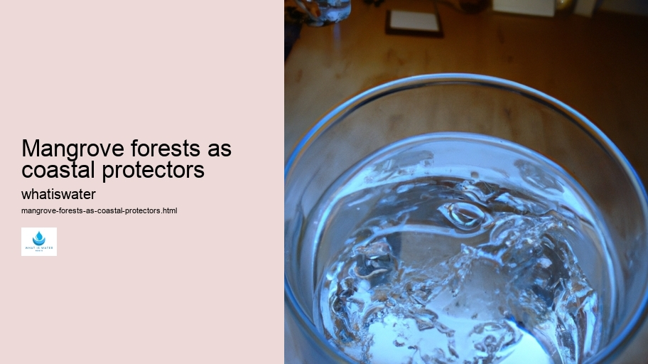

Hydrological Cycle
Hydrological Cycle
Evaporation and transpiration
Condensation and cloud formation
Precipitation and rain patterns
Surface runoff and river systems
Groundwater flow and aquifers
Snowmelt and glacial processes
Water storage in oceans lakes and reservoirs
Soil moisture and infiltration
Water balance and budgeting
Human impact on the hydrological cycle
Marine Ecosystems
Marine Ecosystems
Coral reefs and their biodiversity
Mangrove forests as coastal protectors
Ocean currents and climate regulation
Deepsea habitats and extremophiles
Intertidal zones and estuarine ecosystems
Marine food webs and trophic levels
Freshwater Ecosystems
Freshwater Ecosystems
Conservation efforts for marine species
Marine biogeochemical cycles
Impact of global warming on oceans
Water Resource Management
Water Resource Management
Rivers streams and creeks ecosystems
Lakes ponds wetlands habitats
Biodiversity in freshwater environments
Aquatic plants role in oxygenation
Freshwater fish species diversity
Invasive species impact on freshwater systems
Pollution threats to freshwater sources
Conservation strategies for freshwater biomes
Role of wetlands in flood control
Importance of riparian buffers
Cultural Significance of Water
Cultural Significance of Water
Sustainable water use practices
Desalination technologies for fresh water supply
Wastewater treatment processes
Rainwater harvesting techniques
Management of water during drought conditions
Transboundary water resource politics
Infrastructure for water distribution
Agricultural irrigation efficiency
Urban water demand management
Impact of climate change on water resources
About Us
Contact Us

Mangrove forests as coastal protectors
Watersheds
Mangrove forests, often regarded as the sentinels of the coast, play an instrumental role in safeguarding coastal ecosystems.
Water Filtration
These unique habitats are characterized by salt-tolerant trees and shrubs that have adapted to life in intertidal zones where land meets sea.
Water in Culture and Religion
The dense root systems of mangroves act as natural barriers, absorbing and dissipating the energy from ocean currents, waves, and storm surges.
The protective function of mangroves is multifaceted.
Mangrove forests as coastal protectors - Water Filtration
Hydrologic Cycle
Water Filtration
Water in Culture and Religion
Firstly, their intricate mesh of roots helps to stabilize shorelines and prevent erosion caused by tidal action and severe weather events. This stabilization not only preserves the coastline but also provides a safe haven for various terrestrial species that might otherwise be at risk due to habitat loss.
Watersheds
Moreover, mangrove roots trap sediments flowing down rivers and streams, which further contributes to coastline stability while improving water quality. As these sediments accumulate, they build up the land around the mangroves' base, creating additional space for these forests to expand and thrive.
Biodiversity within mangrove ecosystems is rich; they serve as nurseries for numerous marine species including fish, crustaceans, and mollusks.
Irrigation
Wastewater Treatment
Juvenile aquatic creatures find refuge among the tangled roots where predators cannot easily reach them.
Marine Pollution
Hydrologic Cycle
Ocean Conservation
This abundance of marine life supports local fisheries which are vital for sustaining coastal communities both economically and nutritionally.
Carbon sequestration is another crucial service provided by mangroves. Their capacity to absorb carbon dioxide from the atmosphere is remarkably efficient compared to other forest types due to their fast growth rates and large biomass accumulation both aboveground and in their extensive root systems below ground level.
Despite their importance in coastal protection and ecosystem services provision, mangrove forests face significant threats from human activities such as deforestation for aquaculture development or urbanization, pollution from industrial sources or agricultural runoff leading to degraded waters affecting these sensitive environments.
Conservation efforts are essential if we wish to maintain the natural defenses offered by mangroves against climate change-induced rising sea levels and increasingly frequent extreme weather phenomena.
Mangrove forests as coastal protectors - Water and Sanitation
Ocean Conservation
Water and Sanitation
Hydrologic Cycle
Water Filtration
Protecting existing forests through legislation enforcing sustainable management practices alongside restoring degraded areas can help ensure that future generations will continue benefiting from these remarkable ecosystems' resilience-enhancing capabilities.
In conclusion, Mangrove forests stand on guard at our world's edges—a testament not just to adaptation's power but also a reminder of our responsibility towards preserving nature's own mechanisms designed for coastal fortification against environmental adversities.
Hydrological Cycle
Ocean currents and climate regulation
Check our other pages :
Infrastructure for water distribution
Water balance and budgeting
Aquatic plants role in oxygenation
Frequently Asked Questions
What role do mangrove forests play in coastal protection?
Mangrove forests serve as natural barriers, absorbing wave energy and reducing the impact of storm surges, thereby protecting coastlines from erosion. Their dense root systems trap sediments and stabilize the shoreline, offering resilience against extreme weather events like hurricanes and tsunamis.
How do mangroves help mitigate climate change effects?
Mangroves are highly effective at sequestering carbon dioxide from the atmosphere, storing it in their biomass and soil, which helps mitigate the effects of climate change. This process is known as blue carbon storage. Additionally, by providing a buffer zone against sea-level rise and increased storm activity, they contribute to the adaptation strategies for coastal communities facing climate change impacts.
Can mangrove forests support biodiversity and how?
Yes, mangrove forests are biodiversity hotspots that provide critical habitat for a wide range of species including fish, birds, crustaceans, and mollusks. The complex root systems offer sheltered nursery grounds for many marine organisms while also serving as feeding grounds for various terrestrial creatures and migratory birds.